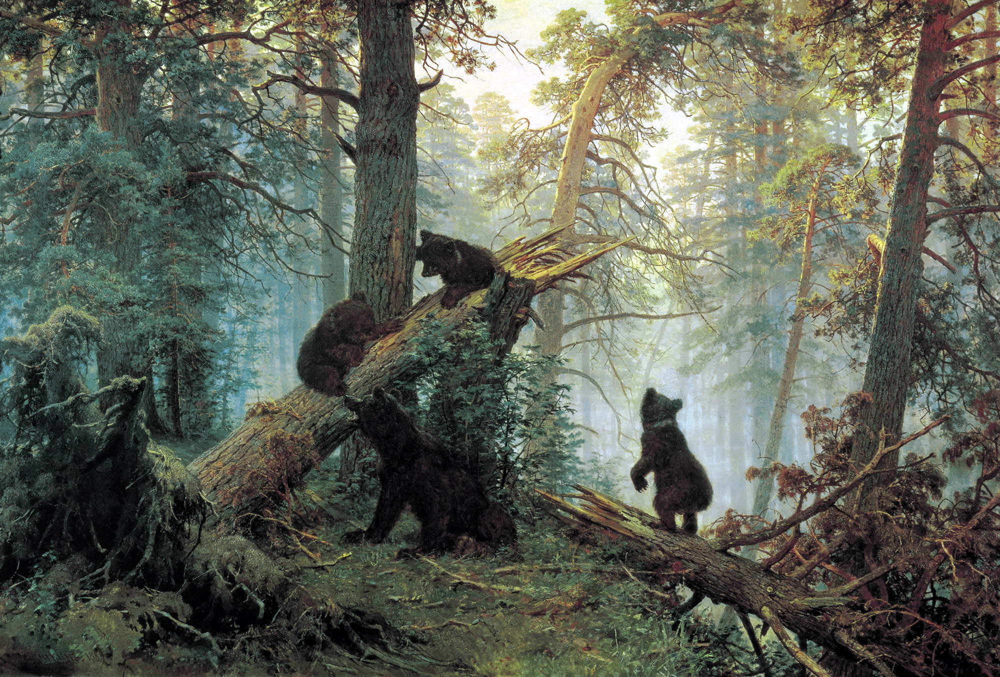

Поиск картин

Утро в сосновом лесу (1889)
Рожь (1878)

Дождь в дубовом лесу (1891)
В окрестностях Дюссельдорфа (1865)

На севере диком (1891)

Песчаный берег (1879)

Сосновый бор. Мачтовый лес в Вятской губернии (1872)
Полдень. В окрестностях Москвы (1869)
Цветы на опушке леса (1893)
Сосновый лес (1889)

Уголок заросшего сада. Сныть-трава (1884)

Дорога во ржи (1866)